Pistol Shrimp
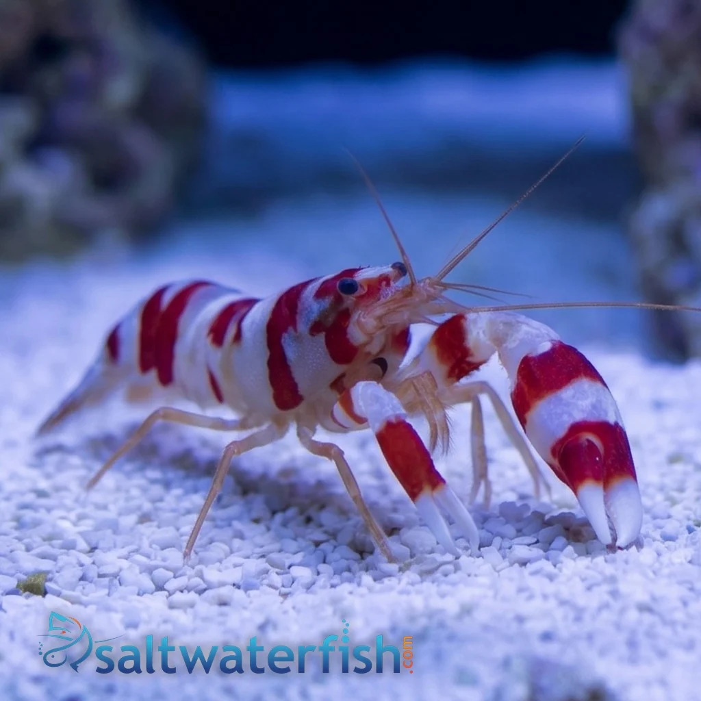
Alpheidae. Snaps its larger claw's pincers together like the hammer of a pistol, shooting a powerful wave of bubbles. Apparently louder than a gun. Cool gal. (30-100m)
Atlantic Shrimp
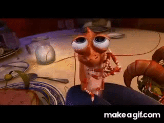
Litopenaeus setiferus. "It's true, it's true! And the other thing is, my sister had a baby and I took it over after she passed away and the baby lost all its legs and arms and now its just a stump but I take care of it with my wife and... and its growing and its fairly happy... and its difficult because I'm working a second shift at the factory to put food on the table but all the love that I see in that little guy's face it makes it worth it in the end. True story." (3-3000m)
Sea Angel
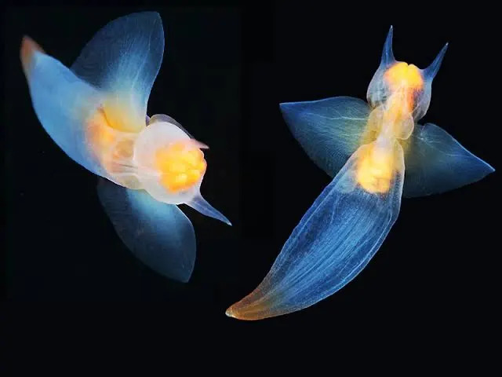
Gymnosomata. Goopy, transparent guy. (600m)
Japanese Spider Crab
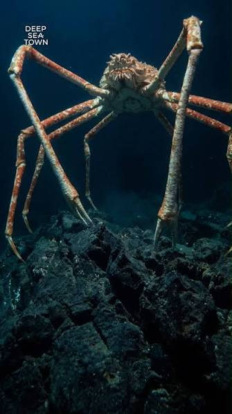
Macrocheira kaempferi. Its legs never stop growing. (50-600m)
Giant Isopod
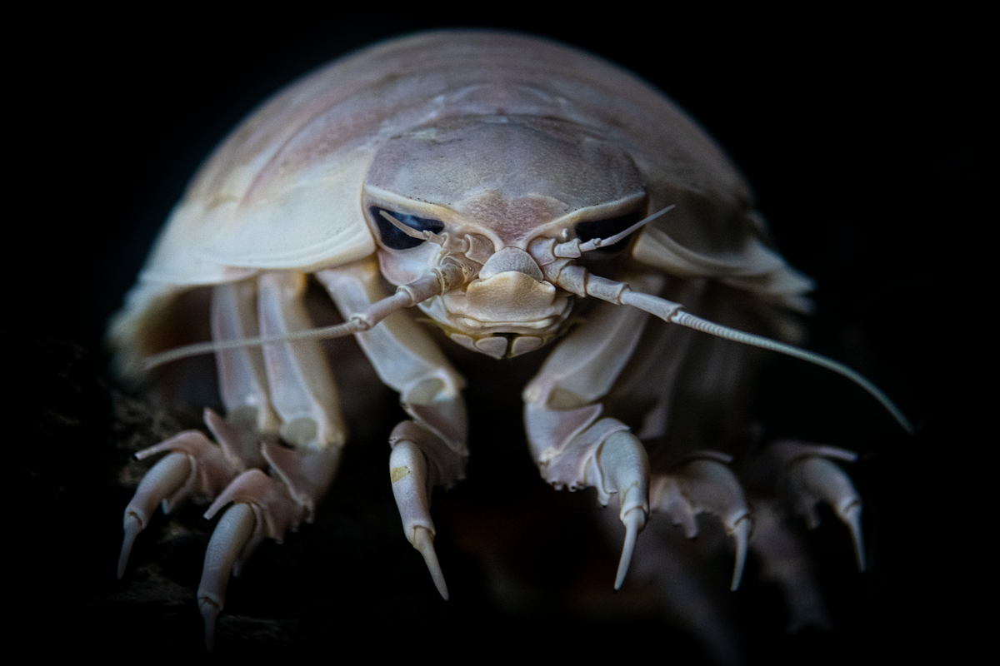
Bathynomus. This mega roly poly has ancestors dated over 150 million years ago. (170-2140m)
Swordtip Squid
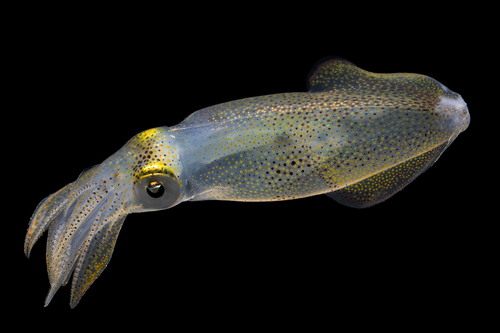
Uroteuthis edulis. Wikipedia page unfortunately shows sushi as its main image. (30-100m)
Cuttlefish
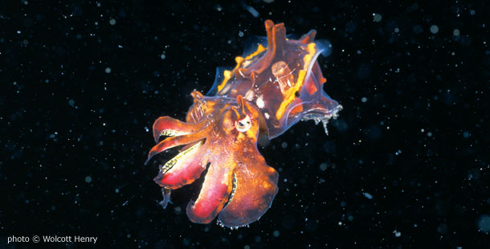
Sepiidae. Squids and octopuses cool cousin. (100-600m)
Tasselled Wobbegong
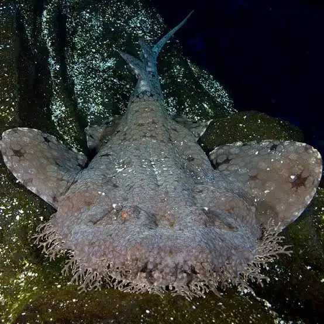
Eucrossorhinus dasypogon. Aptly named carpet shark. (40-50m)
Orange Sea Pen
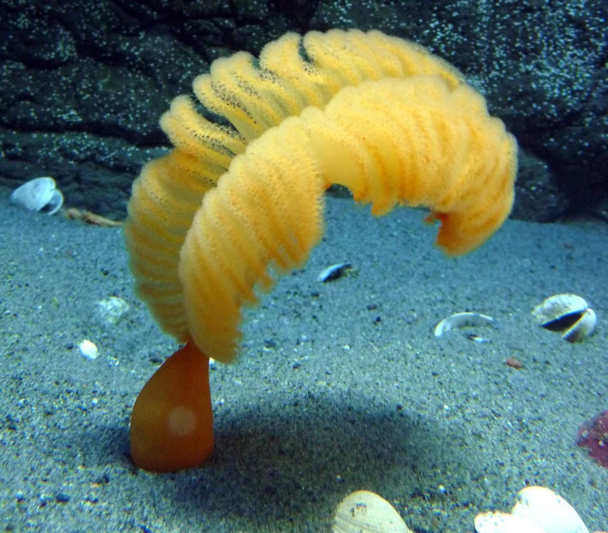
Ptilosarcus gurneyi. Looks like a quill pen. (14-225m)
Red-Lipped Batfish
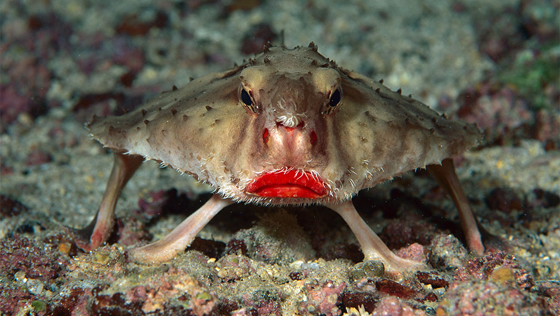
Ogcocephalus darwini. Probably a good kisser. (3-76m)
Ocellated Frogfish
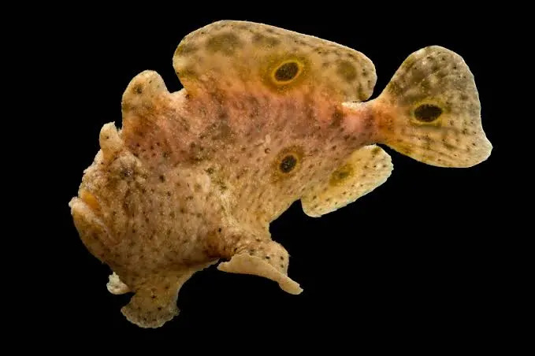
Fowlerichthys ocellatus. Can 'walk' on their dorsal fins. (1-150m)